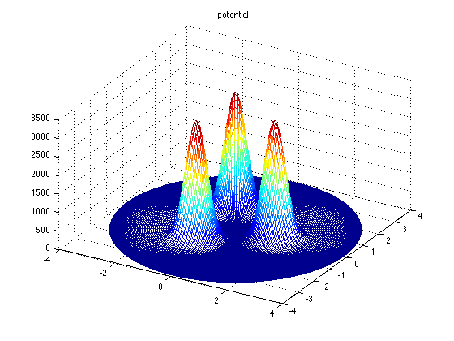
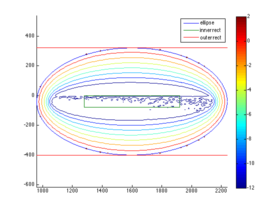

Contents
function demo_three_bumps_sparse
% This demo is the sparse version of demo_three_bumps.m. Sparse % computations are attractive because a finer mesh and better rational % approximations lead to much larger (but sparse!) eigenvalue problems. % Storing the matrices in dense form leads to memory errors. % The sparse versions of the various objects created in demo_three_bumps.m % are much faster to set up, but resonance computation using them is % infeasible at this time due to the lack of a decent preconditioner. % TODO: find a good preconditioner or a better basis! % % Because the eigenvalue computation is impossibly time-consuming, we % return beforehand. See the "publish"-ed version of this m-file in the % html folder. clear all close all addpath('..') addpath('../tests')
Define the potential from the paper and discretize
Rcenters = 1.4;
sigma = 1/3;
hbar = 0.025;
laplaceCoeff = hbar^2/2;
c = Rcenters*exp(2i*pi*(1:3)/3);
G = @(x,y,cj) exp(-abs(x+1i*y-cj).^2/2/sigma^2);
V = @(x,y) (G(x,y,c(1)) + G(x,y,c(2)) + G(x,y,c(3)))/laplaceCoeff;
coords = 'rect';
Sanity check to see we got almost all volume.
cdist = 2.5;
R = Rcenters + cdist;
resid = V(R,0);
fprintf('Potential height at truncation radius = %f is %4.2e\n', R, resid);
Potential height at truncation radius = 3.900000 is 1.95e-09
Choose parameters for dtn problem and rational approximation.
Nt = 110;
Nr = 110;
N = 80;
dtns = DtNBC_sparse(Nt,Nr,{V},coords,R);
Check the potential looks right.
figure, u = dtns.plotFun(V,'potential',@real,coords);
 Pick a region to look at
From Lin's paper.
E0lin = 0.5; dElin = 0.1; ylin = -hbar; % from Lin's paper Fig 14 (top of rectangle is at zero)
innerRec_lin = rect(E0lin-dElin,E0lin+dElin, ylin, 0, [], []);
outerRec_lin = rect(0.2, 0.8, -0.045, 0, [], []);
Scaled for our basis (could also scale B instead).
E0 = E0lin/laplaceCoeff; dE = dElin/laplaceCoeff; y = ylin/laplaceCoeff; innerRec = rect(E0-dE,E0+dE,y,0,[],[]); % pick ellipse that contains it c = E0 + 1i*(innerRec.y1 + innerRec.y2)/2; b = (innerRec.y2 - innerRec.y1)/2 + dE; a = 2*dE; ell = ellipse(c,0,a,b,[],[]); % make a rectangle containing the ellipse buff = 1; x1 = real(ell.c) - ell.a - buff; x2 = real(ell.c) + ell.a + buff; y1 = imag(ell.c) - ell.b - buff; y2 = imag(ell.c) + ell.b + buff; outerRec = rect(x1,x2,y1,y2,100,100);
Define a rational approximation that is good on the ellipse ell.
rats = ratApproxDtNBC_sparse(dtns,ell,1,N);
Do a scattering computation as a sanity check
Define incident wave energy
z = ell.c; % choose center of ellipse as incident wave energy
k = sqrt(z);
Compute scattered wave.
dtnscatt = dtns.solve(k); dtnrect = reshape(dtnscatt,dtns.Nr,dtns.Nt); ratscatt = rats.solve(k); ratrect = reshape(ratscatt,dtns.Nr,dtns.Nt);
Warning: Input tol may not be achievable by GMRES. Try to use a bigger tolerance. Warning: Input tol may not be achievable by GMRES. Try to use a bigger tolerance.
Error at mesh points.
[abserr,relerr] = get_err(dtnscatt,ratscatt);
fprintf('l2 error between dtn and dtn_rat sols: %4.2e, %4.2e\n', abserr, relerr);
l2 error between dtn and dtn_rat sols: 3.31e-08, 4.58e-11
Problem we want small residuals with respect to.
Tfun = @(z,x0) dtns.apply_T(x0, rats.mysqrt(z));
Show the region, show DtN map approx error, poles of DtN map (if any).
figure, hold all ell.draw() innerRec.draw() outerRec.draw() rats.show_poles(outerRec) rats.show_error(outerRec) outerRec.focus(0); axis equal legend('ellipse','inner rect','outer rect');
Resonance computation
Get eigenvalues of rational approximation (some spurious). Considering how slow the scattering computations were above (just 1 solve!), it is clearly infeasible to do the eigenvalue computation we need to do. A better preconditioner is needed. Alternatively, we need a different basis.
return Neigs = min(dtns.Nt*dtns.Nr/2, 300); % look for this many [resvecs,resvals] = rats.resonances(Neigs,ell.c);
In our units, the resonance estimates are in the vector resvals. See the end of demo_three_bumps.m for how to scale and plot them and compare to Fig. 14 in Lin's paper.